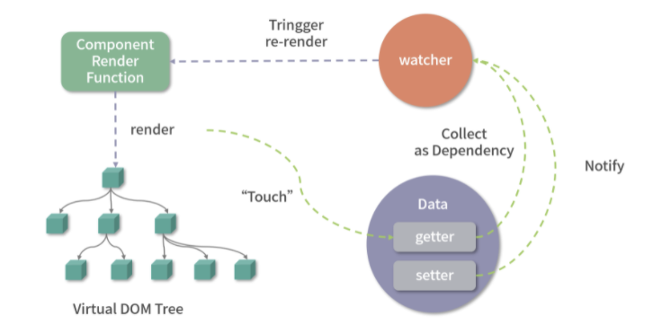
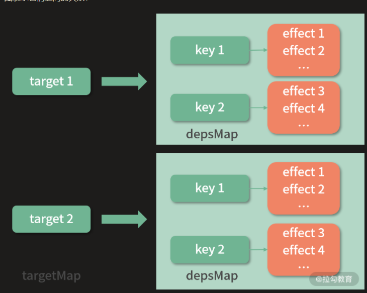
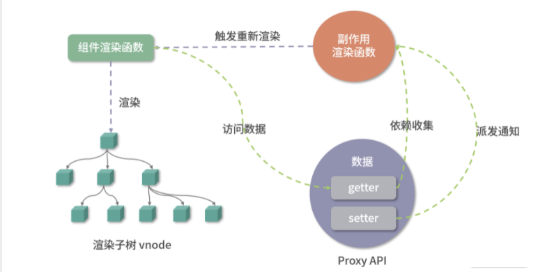

源码地址
本节课的相关代码在源代码中的位置如下：
packages/reactivity/src/baseHandlers.ts
packages/reactivity/src/effect.ts
packages/reactivity/src/reactive.ts
packages/reactivity/src/ref.ts
除了组件化，Vue.js 另一个核心设计思想就是响应式。它的本质是当数据变化后会自动执行某个函数，映射到组件的实现就是，当数据变化后，会自动触发组件的重新渲染。响应式是 Vue.js 组件化更新渲染的一个核心机制。
我们先来回顾一下 Vue.js 2.x 响应式实现的部分： 它在内部通过 Object.defineProperty API 劫持数据的变化，在数据被访问的时候收集依赖，然后在数据被修改的时候通知依赖更新。我们用一张图可以直观地看清这个流程。

在 Vue.js 2.x 中，Watcher 就是依赖，有专门针对组件渲染的 render watcher。注意这里有两个流程，首先是依赖收集流程，组件在 render 的时候会访问模板中的数据，触发 getter 把 render watcher 作为依赖收集，并和数据建立联系；然后是派发通知流程，当我对这些数据修改的时候，会触发 setter，通知 render watcher 更新，进而触发了组件的重新渲染。
Object.defineProperty API 的一些缺点是：不能监听对象属性新增和删除；初始化阶段递归执行 Object.defineProperty 带来的性能负担。
Vue.js 3.0 为了解决 Object.defineProperty 的这些缺陷，使用 Proxy API 重写了响应式部分，并独立维护和发布整个 reactivity 库，下面我们就一起来深入学习 Vue.js 3.0 响应式部分的实现原理。
响应式对象的实现差异
在 Vue.js 2.x 中构建组件时，只要我们在 data、props、computed 中定义数据，那么它就是响应式的，举个例子：
1 | <template> |
上述组件初次渲染会显示“msg reactive”，当我们点击按钮的时候，会执行 random 函数，random 函数会修改 this.msg，就会发现组件重新渲染了。
我们对这个例子做一些改动，模板部分不变，我们把 msg 数据的定义放到created 钩子中：
1 | export default { |
此时，组件初次渲染显示“msg not reactive”，但是我们再次点击按钮就会发现组件并没有重新渲染。
个问题相信你可能遇到过，其中的根本原因是我们在 created 中定义的 this.msg 并不是响应式对象，所以 Vue.js 内部不会对它做额外的处理。而 data 中定义的数据，Vue.js 内部在组件初始化的过程中会把它变成响应式，这是一个相对黑盒的过程，用户通常不会感知到。
你可能会好奇，为什么我在 created 钩子函数中定义数据而不在 data 中去定义？其实在 data 中定义数据最终也是挂载到组件实例 this 上，这和我直接在 created 钩子函数通过 this.xxx 定义的数据唯一区别就是，在 data 中定义的数据是响应式的。
在一些场景下，如果我们仅仅想在组件上下文中共享某个变量，而不必去监测它的变化，这时就特别适合在 created 钩子函数中去定义这个变量，因为创建响应式的过程是有性能代价的，这相当于一种 Vue.js 应用的性能优化小技巧，你掌握了这一点就可以在合适的场景中应用了。
到了 Vue.js 3.0 构建组件时，你可以不依赖于 Options API，而使用 Composition API 去编写。对于刚才的例子，我们可以用 Composition API 这样改写：
1 | <template> |
可以看到，我们通过 setup 函数实现和前面示例同样的功能。请注意，这里我们引入了 reactive API，它可以把一个对象数据变成响应式。 可以看出来 Composition API 更推荐用户主动定义响应式对象，而非内部的黑盒处理。这样用户可以更加明确哪些数据是响应式的，如果你不想让数据变成响应式，就定义成它的原始数据类型即可。
Reactive API
我们先来看一下 reactive 函数的具体实现过程：
1 | function reactive (target) { |
可以看到，reactive 内部通过 createReactiveObject 函数把 target 变成了一个响应式对象。
在这个过程中，createReactiveObject 函数主要做了以下几件事情。
-
函数首先判断 target 是不是数组或者对象类型，如果不是则直接返回。所以原始数据 target 必须是对象或者数组。
-
如果对一个已经是响应式的对象再次执行 reactive，还应该返回这个响应式对象，举个例子：
1
2
3
4
5import { reactive } from 'vue'
const original = { foo: 1 }
const observed = reactive(original)
const observed2 = reactive(observed)
observed === observed2 // true可以看到 observed 已经是响应式结果了，如果对它再去执行 reactive，返回的值 observed2 和 observed 还是同一个对象引用。
因为这里 reactive 函数会通过
target.__v_raw属性来判断 target 是否已经是一个响应式对象（因为响应式对象的__v_raw属性会指向它自身，后面会提到），如果是的话则直接返回响应式对象。 -
如果对同一个原始数据多次执行 reactive ，那么会返回相同的响应式对象，举个例子：
1
2
3
4
5import { reactive } from 'vue'
const original = { foo: 1 }
const observed = reactive(original)
const observed2 = reactive(original)
observed === observed2 // true可以看到，原始数据 original 被反复执行 reactive，但是响应式结果 observed 和 observed2 是同一个对象。
所以这里 reactive 函数会通过 target.__v_reactive 判断 target 是否已经有对应的响应式对象（因为创建完响应式对象后，会给原始对象打上 __v_reactive 标识，后面会提到），如果有则返回这个响应式对象。
-
使用 canObserve 函数对 target 对象做一进步限制：
1
2
3
4
5
6const canObserve = (value) => {
return (!value.__v_skip &&
isObservableType(toRawType(value)) &&
!Object.isFrozen(value))
}
const isObservableType = /*#__PURE__*/ makeMap('Object,Array,Map,Set,WeakMap,WeakSet')比如，带有
__v_skip属性的对象、被冻结的对象，以及不在白名单内的对象如 Date 类型的对象实例是不能变成响应式的。 -
通过 Proxy API 劫持 target 对象，把它变成响应式。我们把 Proxy 函数返回的结果称作响应式对象，这里 Proxy 对应的处理器对象会根据数据类型的不同而不同，我们稍后会重点分析基本数据类型的 Proxy 处理器对象，reactive 函数传入的 baseHandlers 值是 mutableHandlers。
-
给原始数据打个标识，如下：
1
target.__v_reactive = observed
这就是前面“对同一个原始数据多次执行 reactive ，那么会返回相同的响应式对象”逻辑的判断依据。
仔细想想看，响应式的实现方式无非就是劫持数据，Vue.js 3.0 的 reactive API 就是通过 Proxy 劫持数据，而且由于 Proxy 劫持的是整个对象，所以我们可以检测到任何对对象的修改，弥补了 Object.defineProperty API 的不足。
接下来，我们继续看 Proxy 处理器对象 mutableHandlers 的实现：
1 | const mutableHandlers = { |
它其实就是劫持了我们对 observed 对象的一些操作，比如：
-
访问对象属性会触发 get 函数；
-
设置对象属性会触发 set 函数；
-
删除对象属性会触发 deleteProperty 函数；
-
in 操作符会触发 has 函数；
-
通过 Object.getOwnPropertyNames 访问对象属性名会触发 ownKeys 函数。
因为无论命中哪个处理器函数，它都会做依赖收集和派发通知这两件事其中的一个，所以这里我只要分析常用的 get 和 set 函数就可以了
依赖收集：get 函数
依赖收集发生在数据访问的阶段，由于我们用 Proxy API 劫持了数据对象，所以当这个响应式对象属性被访问的时候就会执行 get 函数，我们来看一下 get 函数的实现，其实它是执行 createGetter 函数的返回值，为了分析主要流程，这里省略了 get 函数中的一些分支逻辑，isReadonly 也默认为 false：
1 | function createGetter(isReadonly = false) { |
结合上述代码来看，get 函数主要做了四件事情
-
对特殊的key做代理
首先对特殊的 key 做了代理，这就是为什么我们在
createReactiveObject函数中判断响应式对象是否存在__v_raw属性，如果存在就返回这个响应式对象本身。 -
通过
Reflect.get方法求值接着通过 Reflect.get 方法求值，如果 target 是数组且 key 命中了 arrayInstrumentations，则执行对应的函数，我们可以大概看一下 arrayInstrumentations 的实现：
1
2
3
4
5
6
7
8
9
10
11
12
13
14
15
16
17
18
19
20const arrayInstrumentations = {}
['includes', 'indexOf', 'lastIndexOf'].forEach(key => {
arrayInstrumentations[key] = function (...args) {
// toRaw 可以把响应式对象转成原始数据
const arr = toRaw(this)
for (let i = 0, l = this.length; i < l; i++) {
// 依赖收集
track(arr, "get" /* GET */, i + '')
}
// 先尝试用参数本身，可能是响应式数据
const res = arr[key](...args)
if (res === -1 || res === false) {
// 如果失败，再尝试把参数转成原始数据
return arr[key](...args.map(toRaw))
}
else {
return res
}
}
})也就是说，当 target 是一个数组的时候，我们去访问 target.includes、target.indexOf 或者 target.lastIndexOf 就会执行 arrayInstrumentations 代理的函数，除了调用数组本身的方法求值外，还对数组每个元素做了依赖收集。因为一旦数组的元素被修改，数组的这几个 API 的返回结果都可能发生变化，所以我们需要跟踪数组每个元素的变化。
-
执行
track函数收集依赖下面重点分析
-
对计算的值
res进行判断函数最后会对计算的值 res 进行判断，如果它也是数组或对象，则递归执行 reactive 把 res 变成响应式对象。这么做是因为 Proxy 劫持的是对象本身，并不能劫持子对象的变化，这点和
Object.defineProperty API一致。但是Object.defineProperty是在初始化阶段，即定义劫持对象的时候就已经递归执行了，而 Proxy 是在对象属性被访问的时候才递归执行下一步reactive，这其实是一种延时定义子对象响应式的实现，在性能上会有较大的提升。
整个 get 函数最核心的部分其实是执行 track 函数收集依赖，下面我们重点分析这个过程。
我们先来看一下 track 函数的实现：
1 | // 是否应该收集依赖 |
分析这个函数的实现前，我们先想一下要收集的依赖是什么，我们的目的是实现响应式，就是当数据变化的时候可以自动做一些事情，比如执行某些函数，所以我们收集的依赖就是数据变化后执行的副作用函数。
再来看实现，我们把 target 作为原始的数据，key 作为访问的属性。我们创建了全局的 targetMap 作为原始数据对象的 Map，它的键是 target，值是 depsMap，作为依赖的 Map；这个 depsMap 的键是 target 的 key，值是 dep 集合，dep 集合中存储的是依赖的副作用函数。为了方便理解，可以通过下图表示它们之间的关系：

所以每次 track ，就是把当前激活的副作用函数 activeEffect 作为依赖，然后收集到 target 相关的 depsMap 对应 key 下的依赖集合 dep 中。
派发通知：set 函数
派发通知发生在数据更新的阶段 ，由于我们用 Proxy API 劫持了数据对象，所以当这个响应式对象属性更新的时候就会执行 set 函数。我们来看一下 set 函数的实现，它是执行 createSetter 函数的返回值：
1 | function createSetter() { |
结合上述代码来看，set 函数的实现逻辑很简单，主要就做两件事情， 首先通过 Reflect.set 求值 ， 然后通过 trigger 函数派发通知 ，并依据 key 是否存在于 target 上来确定通知类型，即新增还是修改。
整个 set 函数最核心的部分就是 执行 trigger 函数派发通知 ，下面我们将重点分析这个过程。
我们先来看一下 trigger 函数的实现，为了分析主要流程，这里省略了 trigger 函数中的一些分支逻辑：
1 | // 原始数据对象 map |
trigger 函数的实现也很简单，主要做了四件事情：
-
通过 targetMap 拿到 target 对应的依赖集合 depsMap；
-
创建运行的 effects 集合；
-
根据 key 从 depsMap 中找到对应的 effects 添加到 effects 集合；
-
遍历 effects 执行相关的副作用函数。
所以每次 trigger 函数就是根据 target 和 key ，从 targetMap 中找到相关的所有副作用函数遍历执行一遍。
在描述依赖收集和派发通知的过程中，我们都提到了一个词：副作用函数，依赖收集过程中我们把 activeEffect（当前激活副作用函数）作为依赖收集，它又是什么？接下来我们来看一下副作用函数的庐山真面目。
副作用函数
介绍副作用函数前，我们先回顾一下响应式的原始需求，即我们修改了数据就能自动执行某个函数，举个简单的例子：
1 | import { reactive } from 'vue' |
可以看到，这里我们定义了响应式对象 counter，然后我们在 logCount 中访问了 counter.num，我们希望通过执行 count 函数修改 counter.num 值的时候，能自动执行 logCount 函数。
按我们之前对依赖收集过程的分析，如果这个 logCount 就是 activeEffect 的话，那么就可以实现需求，但显然是做不到的，因为代码在执行到 console.log(counter.num)这一行 的时候，它对自己在 logCount 函数中的运行是一无所知的。
那么该怎么办呢？其实只要我们运行 logCount 函数前，把 logCount 赋值给 activeEffect 就好了，如下：
1 | activeEffect = logCount |
顺着这个思路，我们可以利用高阶函数的思想，对 logCount 做一层封装，如下：
1 | function wrapper(fn) { |
这里，wrapper 本身也是一个函数，它接受 fn 作为参数，返回一个新的函数 wrapped，然后维护一个全局的 activeEffect，当 wrapped 执行的时候，把 activeEffect 设置为 fn，然后执行 fn 即可。
这样当我们执行 wrappedLog 后，再去修改 counter.num，就会自动执行 logCount 函数了。
实际上 Vue.js 3.0 就是采用类似的做法，在它内部就有一个 effect 副作用函数，我们来看一下它的实现：
1 | // 全局 effect 栈 |
结合上述代码来看，effect 内部通过执行 createReactiveEffect 函数去创建一个新的 effect 函数，为了和外部的 effect 函数区分，我们把它称作 reactiveEffect 函数，并且还给它添加了一些额外属性（我在注释中都有标明）。另外，effect 函数还支持传入一个配置参数以支持更多的 feature，我们这里就不展开了，在后续的章节会详细分析。
接着说，这个 reactiveEffect 函数就是响应式的副作用函数，当执行 trigger 过程派发通知的时候，执行的 effect 就是它。
按我们之前的分析，这个 reactiveEffect 函数只需要做两件事情：
- 把全局的 activeEffect 指向它 ，
- 然后执行被包装的原始函数 fn 即可 。
但实际上它的实现要更复杂一些，首先它会判断 effect 的状态是否是 active，这其实是一种控制手段，允许在非 active 状态且非调度执行情况，则直接执行原始函数 fn 并返回，在后续学习完侦听器后你会对它的理解更加深刻。
接着判断 effectStack 中是否包含 effect，如果没有就把 effect 压入栈内。之前我们提到，只要设置 activeEffect = effect 即可，那么这里为什么要设计一个栈的结构呢？
其实是考虑到以下这样一个嵌套 effect 的场景：
1 | import { reactive} from 'vue' |
我们每次执行 effect 函数时，如果仅仅把 reactiveEffect 函数赋值给 activeEffect，那么针对这种嵌套场景，执行完 effect(logCount2) 后，activeEffect 还是 effect(logCount2) 返回的 reactiveEffect 函数，这样后续访问 counter.num 的时候，依赖收集对应的 activeEffect 就不对了，此时我们外部执行 count 函数修改 counter.num 后执行的便不是 logCount 函数，而是 logCount2 函数，最终输出的结果如下：
1 | num2: 0 |
而我们期望的结果应该如下：
1 | num2: 0 |
因此针对嵌套 effect 的场景，我们不能简单地赋值 activeEffect，应该考虑到函数的执行本身就是一种入栈出栈操作，因此我们也可以设计一个 effectStack，这样每次进入 reactiveEffect 函数就先把它入栈，然后 activeEffect 指向这个 reactiveEffect 函数，接着在 fn 执行完毕后出栈，再把 activeEffect 指向 effectStack 最后一个元素，也就是外层 effect 函数对应的 reactiveEffect。
这里我们还注意到一个细节，在入栈前会执行 cleanup 函数清空 reactiveEffect 函数对应的依赖 。在执行 track 函数的时候，除了收集当前激活的 effect 作为依赖，还通过 activeEffect.deps.push(dep) 把 dep 作为 activeEffect 的依赖，这样在 cleanup 的时候我们就可以找到 effect 对应的 dep 了，然后把 effect 从这些 dep 中删除。cleanup 函数的代码如下所示：
1 | function cleanup(effect) { |
为什么需要 cleanup 呢？如果遇到这种场景：
1 | <template> |
结合代码可以知道，这个组件的视图会根据 showMsg 变量的控制显示 msg 或者一个随机数，当我们点击 Switch View 的按钮时，就会修改这个变量值。
假设没有 cleanup，在第一次渲染模板的时候，activeEffect 是组件的副作用渲染函数，因为模板 render 的时候访问了 state.msg，所以会执行依赖收集，把副作用渲染函数作为 state.msg 的依赖，我们把它称作 render effect。然后我们点击 Switch View 按钮，视图切换为显示随机数，此时我们再点击 Toggle Msg 按钮，由于修改了 state.msg 就会派发通知，找到了 render effect 并执行，就又触发了组件的重新渲染。
但这个行为实际上并不符合预期，因为当我们点击 Switch View 按钮，视图切换为显示随机数的时候，也会触发组件的重新渲染，但这个时候视图并没有渲染 state.msg，所以对它的改动并不应该影响组件的重新渲染。
因此在组件的 render effect 执行之前，如果通过 cleanup 清理依赖，我们就可以删除之前 state.msg 收集的 render effect 依赖。这样当我们修改 state.msg 时，由于已经没有依赖了就不会触发组件的重新渲染，符合预期。
至此，我们从 reactive API 入手了解了整个响应式对象的实现原理。除了 reactive API，Vue.js 3.0 还提供了其他好用的响应式 API，接下来我们一起分析一些常用的。
readonly API
如果用 const 声明一个对象变量，虽然不能直接对这个变量赋值，但我们可以修改它的属性。如果我们希望创建只读对象，不能修改它的属性，也不能给这个对象添加和删除属性，让它变成一个真正意义上的只读对象。
1 | const original = { |
显然，想实现上述需求就需要劫持对象，于是 Vue.js 3.0 在 reactive API 的基础上，设计并实现了 readonly API。
我们先来看一下 readonly 的实现：
1 | function readonly(target) { |
其实 readonly 和 reactive 函数的主要区别，就是执行 createReactiveObject 函数时的参数 isReadonly 不同。
我们来看这里的代码，首先 isReadonly 变量为 true，所以在创建过程中会给原始对象 target 打上一个 __v_readonly 的标识。另外还有一个特殊情况，如果 target 已经是一个 reactive 对象，就会把它继续变成一个 readonly 响应式对象。
其次就是 baseHandlers 的 collectionHandlers 的区别，我们这里仍然只关心基本数据类型的 Proxy 处理器对象，readonly 函数传入的 baseHandlers 值是 readonlyHandlers。
接下来，我们来看一下其中 readonlyHandlers 的实现：
1 | const readonlyHandlers = { |
readonlyHandlers 和 mutableHandlers 的区别主要在 get、set 和 deleteProperty 三个函数上。很显然，作为一个只读的响应式对象，是不允许修改属性以及删除属性的，所以在非生产环境下 set 和 deleteProperty 函数的实现都会报警告，提示用户 target 是 readonly 的。
接下来我们来看一下其中 readonlyGet 的实现，它其实就是 createGetter(true) 的返回值：
1 | function createGetter(isReadonly = false) { |
可以看到，它和 reactive API 最大的区别就是不做依赖收集了，这一点也非常好理解，因为它的属性不会被修改，所以就不用跟踪它的变化了。
到这里，readonly API 就介绍完了，接下来我们分析一下另一个常用的响应式 API：ref。
ref API
通过前面的分析，我们知道 reactive API 对传入的 target 类型有限制，必须是对象或者数组类型，而对于一些基础类型（比如 String、Number、Boolean）是不支持的。
但是有时候从需求上来说，可能我只希望把一个字符串变成响应式，却不得不封装成一个对象，这样使用上多少有一些不方便，于是 Vue.js 3.0 设计并实现了 ref API。
1 | const msg = ref('Hello World') |
我们先来看一下 ref 的实现：
1 | function ref(value) { |
可以看到，函数首先处理了嵌套 ref 的情况，如果传入的 rawValue 也是 ref，那么直接返回。
接着对 rawValue 做了一层转换，如果 rawValue 是对象或者数组类型，那么把它转换成一个 reactive 对象。
最后定义一个对 value 属性做 getter 和 setter 劫持的对象并返回，get 部分就是执行 track 函数做依赖收集然后返回它的值；set 部分就是设置新值并且执行 trigger 函数派发通知。
Vue3.2 响应式优化
依赖收集的优化
目前每次副作用函数执行，都需要先执行 cleanup 清除依赖，然后在副作用函数执行的过程中重新收集依赖，这个过程牵涉到大量对 Set 集合的添加和删除操作。在许多场景下，依赖关系是很少改变的，因此这里存在一定的优化空间。
为了减少集合的添加删除操作，我们需要标识每个依赖集合的状态，比如它是不是新收集的，还是已经被收集过的。
所以这里需要给集合 dep 添加两个属性：
1 |
|
其中 w 表示是否已经被收集，n 表示是否新收集。
然后设计几个全局变量，effectTrackDepth、trackOpBit、maxMarkerBits。
其中 effectTrackDepth 表示递归嵌套执行 effect 函数的深度；trackOpBit 用于标识依赖收集的状态；maxMarkerBits 表示最大标记的位数。
接下来看它们的应用：
1 | function effect(fn, options) { |
可以看到，effect 函数的实现做了一定的修改和调整，内部使用 ReactiveEffect 类创建了一个 _effect 实例，并且函数返回的 runner 指向的是 ReactiveEffect 类的 run 方法。
也就是执行副作用函数 effect 函数时，实际上执行的就是这个 run 函数。
当 run 函数执行的时候，我们注意到 cleanup 函数不再默认执行，在封装的函数 fn 执行前，首先执行 trackOpBit = 1 << ++effectTrackDepth 记录 trackOpBit，然后对比递归深度是否超过了 maxMarkerBits，如果超过（通常情况下不会）则仍然执行老的 cleanup 逻辑，如果没超过则执行 initDepMarkers 给依赖打标记，来看它的实现：
1 | const initDepMarkers = ({ deps }) => { |
initDepMarkers 函数实现很简单，遍历 _effect 实例中的 deps 属性，给每个 dep 的 w 属性标记为 trackOpBit 的值。
接下来会执行 fn 函数，在就是副作用函数封装的函数，比如针对组件渲染，fn 就是组件渲染函数。
当 fn 函数执行时候，会访问到响应式数据，就会触发它们的 getter，进而执行 track 函数执行依赖收集。相应的，依赖收集的过程也做了一些调整：
1 | function track(target, type, key) { |
我们发现，当创建 dep 的时候，是通过执行 createDep 方法完成的，此外，在 dep 把前激活的 effect 作为依赖收集前，会判断这个 dep 是否已经被收集，如果已经被收集，则不需要再次收集了。此外，这里还会判断这 dep 是不是新的依赖，如果不是，则标记为新的。
接下来，我们再来看 fn 执行完后的逻辑：
1 | finally { |
在满足依赖标记的条件下，需要执行 finalizeDepMarkers 完成依赖标记，来看它的实现：
1 | const finalizeDepMarkers = (effect) => { |
finalizeDepMarkers 主要做的事情就是找到那些曾经被收集过但是新的一轮依赖收集没有被收集的依赖，从 deps 中移除。这其实就是解决前面提到的需要 cleanup 场景的问题：在新的组件渲染过程中没有访问到的响应式对象，那么它的变化不应该触发组件的重新渲染。
以上就实现了依赖收集部分的优化，可以看到相比于之前每次执行 effect 函数都需要先清空依赖，再添加依赖的过程，现在的实现会在每次执行 effect 包裹的函数前标记依赖的状态，过程中对于已经收集的依赖不会重复收集，执行完 effect 函数还会移除掉已被收集但是新的一轮依赖收集中没有被收集的依赖。
优化后对于 dep 依赖集合的操作减少了，自然也就优化了性能。
响应式 API 的优化
响应式 API 的优化主要体现在对 ref、computed 等 API 的优化。
ref 优化
以 ref API 为例，来看看它优化前的实现：
1 | function ref(value) { |
ref 函数返回了 createRef 函数执行的返回值，而在 createRef 内部，首先处理了嵌套 ref 的情况，如果传入的 rawValue 也是个 ref，那么直接返回 rawValue；接着返回 RefImpl 对象的实例。
而 RefImpl 内部的实现，主要是劫持它的实例 value 属性的 getter 和 setter。
当访问一个 ref 对象的 value 属性，会触发 getter 执行 track 函数做依赖收集然后返回它的值；当修改一个 ref 对象的 value 值，则会触发 setter 设置新值并且执行 trigger 函数派发通知，如果新值 newVal 是对象或者数组类型，那么把它转换成一个 reactive 对象。
接下来，我们再来看 Vue.js 3.2 对于这部分的实现相关的改动：
1 | class RefImpl { |
主要改动部分就是对 ref 对象的 value 属性执行依赖收集和派发通知的逻辑。
在 Vue.js 3.2 版本的 ref 的实现中，关于依赖收集部分，由原先的 track 函数改成了 trackRefValue，来看它的实现：
1 | function trackRefValue(ref) { |
可以看到这里直接把 ref 的相关依赖保存到 dep 属性中，而在 track 函数的实现中，会把依赖保留到全局的 targetMap 中：
1 | let depsMap = targetMap.get(target) |
显然，track 函数内部可能需要做多次判断和设置逻辑，而把依赖保存到 ref 对象的 dep 属性中则省去了这一系列的判断和设置，从而优化性能。
相应的，ref 的实现关于派发通知部分，由原先的 trigger 函数改成了 triggerRefValue，来看它的实现：
1 | function triggerRefValue(ref, newVal) { |
由于直接从 ref 属性中就拿到了它所有的依赖且遍历执行，不需要执行 trigger 函数一些额外的查找逻辑，因此在性能上也得到了提升。
trackOpBit 的设计
细心的你可能会发现，标记依赖的 trackOpBit，在每次计算时采用了左移的运算符 trackOpBit = 1 << ++effectTrackDepth；并且在赋值的时候，使用了或运算：
1 | deps[i].w |= trackOpBit |
那么为什么这么设计呢？因为 effect 的执行可能会有递归的情况，通过这种方式就可以记录每个层级的依赖标记情况。
在判断某个 dep 是否已经被依赖收集的时候，使用了 wasTracked 函数：
通过与运算的结果是否大于 0 来判断，这就要求依赖被收集时嵌套的层级要匹配。举个例子，假设此时 dep.w 的值是 2，说明它是在第一层执行 effect 函数时创建的，但是这时候已经执行了嵌套在第二层的 effect 函数，trackOpBit 左移两位变成了 4，2 & 4 的值是 0，那么 wasTracked 函数返回值为 false，说明需要收集这个依赖。显然，这个需求是合理的。
可以看到，如果没有 trackOpBit 位运算的设计，你就很难去处理不同嵌套层级的依赖标记，这个设计也体现了 basvanmeurs 大佬非常扎实的计算机基础功力。
总结

这幅图是不是很眼熟？没错，它和前面 Vue.js 2.x 的响应式原理图很接近，其实 Vue.js 3.0 在响应式的实现思路和 Vue.js 2.x 差别并不大，主要就是 劫持数据的方式改成用 Proxy 实现 ， 以及收集的依赖由 watcher 实例变成了组件副作用渲染函数 。
题外
为什么说 Vue.js 3 的响应式 API 实现和 Vue.js 2.x 相比性能要好，具体好在哪里呢？它又有哪些不足呢？
Object.defineProperty 不能监听对象属性新增和删除，在初始化阶段递归执行劫持对象属性，性能损耗较大；而 Proxy 可以监听到对象属性的增删改，在访问对象属性时才递归执行劫持对象属性，在性能上有所提升。不过 Proxy API 属于 ES6 规范，目前 IE 尚不支持。
If you like this blog or find it useful for you, you are welcome to comment on it. You are also welcome to share this blog, so that more people can participate in it. If the images used in the blog infringe your copyright, please contact the author to delete them. Thank you !